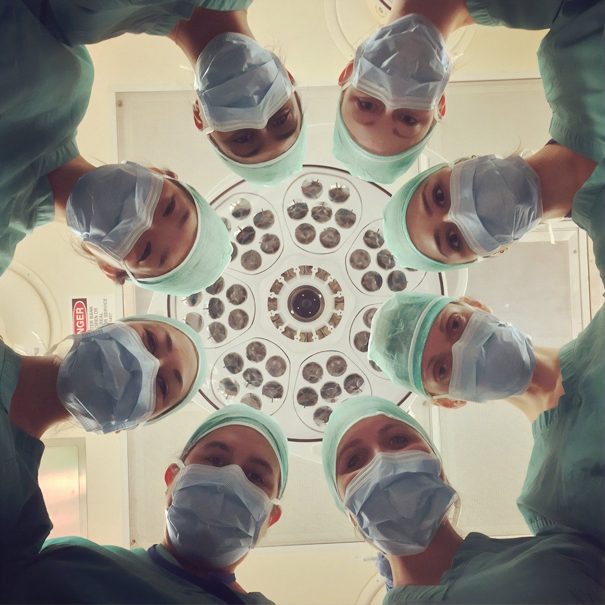

<div class="main main-raised" style="margin-top: 0px">
    <div class="container" style="margin-top: 42px; padding-top: 8px">
        <div class="row">

            <div class="section-text text-left col-lg-6 col-md-12">
                <h1>Post Operation Acupuncture</h1>
                <h2>Pain relief free of opiods</h2>

                <p>The recovery process after an operation can be long and sometimes difficult. Utilizing acupuncture
                    before and after a surgical procedure can help reduce troubling symptoms as well as expedite healing
                    time. Acupuncture has been reported to help fortify and alleviate:</p>
                <ul>
                    <li>Wound healing</li>
                    <li>Decrease pain and inhibit inflammation</li>
                    <li>Accelerate recovery time</li>
                    <li>Boost immune system</li>
                    <li>Scar tissue overgrowth</li>
                    <li>Ease peri-operative stress and anxiety</li>
                    <li>Side effects from anesthesia</li>
                    <ul>
                        <li>Nausea</li>
                        <li>Shifts in mood</li>
                        <li>Headaches</li>
                        <li>Memory Loss</li>
                        <li>Insomnia</li>
                    </ul>
                </ul>
                <div style="margin-top: 24px">
                    <a class="btn btn-primary btn-raised" href={{ "support/acupuncture-faq.html#per-acu" | relative_url }}>
                        Learn More 
                    </a>
                </div>
            </div>
            <div class="section col-lg-6 col-md-12">
                
            </div>
        </div>
        <div class="row rounded-top-card" style="padding: 50px 0px;background-color: #f5f5f5;">
            <div class="section-text text-center col-lg-6 col-md-12" style="margin: 0 auto">
                <h3 style="font-weight: 400">According to the American College of Occupational and Environmental Medicine, the US has 4.5% of the
                    worlds population, and we consume 99% of all the world’s hydrocodone and 80% of oxycodone.</h3>
                <p>Acupuncture is a great holistic alternative to the contemporary painkillers that are prescribed after surgery. We will customize a treatment plan for you, all the while working closely with your surgeon.
                    With minimal to no side effects, integrative acupuncture is a great addition to help enhance your recovery
                    plan.</p>
            </div>
        </div>
    </div>
</div>